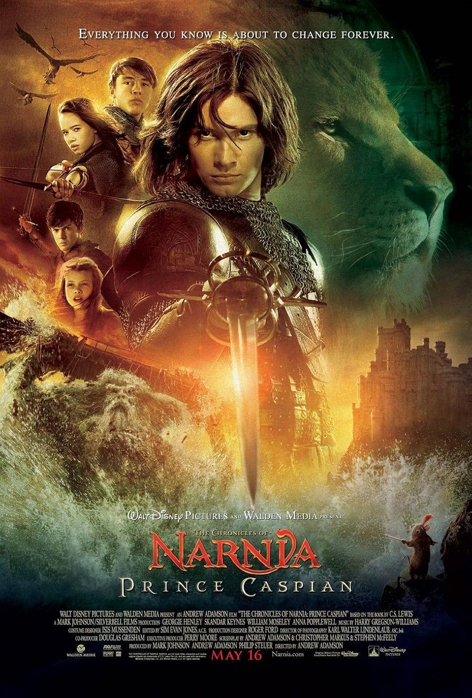

A fantasy and adventure that follows the four Pevensie siblings (Peter, Susan, Edmund, and Lucy) as they return to Narnia and help Prince Caspian save his kingdom.
the four Pevensie siblings,(Peter, Susan, Edmund, and Lucy) return to Narnia after many years.
They meet Prince Caspian, who is trying to take back his kingdom from his evil uncle, King Miraz.
Together, they fight to protect Narnia and bring peace back to the land of narnia.
Plays Prince Caspian, the rightful prince of Narnia who fights to reclaim his kingdom from his uncle.
Plays Peter Pevensie, the oldest of the four siblings and a leader in the fight.
Plays Susan Pevensie, the second oldest of the four siblings who is skilled with a bow and helps defend King Miraz.
Plays Edmund Pevensie, Peter’s younger brother who helps Caspian and the Narnians.
Plays Lucy Pevensie, the youngest sibling who believes in Aslan and helps guide the others.
Provides the voice of Aslan, the powerful lion who helps and guides the people of Narnia.
since I was still a kid this movie is the movie that i always rewatch when im sad or just missing it. I would give this movie a 5 out of 5 and would recommend to others.